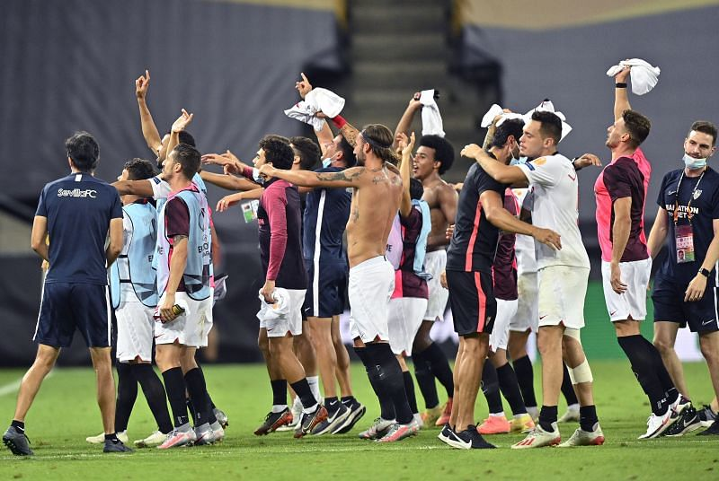

3. Sevilla Start Slow But Come Into The Match
The whole Sevilla team looked off early in the match, they gave up many easy chances to United in the first half. They were poor in possession, giving the ball away needlessly, and their defense was even worse, relying on backup goalkeeper Yassine Bounou (who had an amazing game) to bail them out. This was exemplified in the 8th minute, when a few defensive mishaps led to Marcus Rashford on goal, where he was taken out by a late Diego Carlos challenge, resulting in a Manchester United penalty.
The 26th minute was the only instance in the first half where we got to see the real Sevilla. Lucas Ocampos broke away down the left wing and centered the ball to Sergio Reguilon (who Fred had left wide-open). Reguilon played the ball across the net to right-winger Suso, who had an easy finish due to poor marking from United’s Brandon Williams.
Only after de Jong scored in the 78th minute, and Sevilla were winning, did they begin to play well again. They kept the ball from a tired United side, and thoroughly outclassed them by having their full-backs get wide and make overlapping runs. They even got a few more chances on goal, and de Jong blew an easy chance to make it 3-1 by misplaying a pass to Nemanja Gudelj. United couldn’t handle peak-Sevilla's play, and Los Rojiblancos saw the match out comfortably.
4. Atrocious Finishing From United
46 shots. 21 on target. 0 goals from open play. Those are the stats from Manchester United’s last two Europa League ties against Copenhagen and Sevilla. Granted, both teams’ goalkeepers had incredible performances against United, but for a team boasting the forwards Marcus Rashford, Anthony Martial, Mason Greenwood, and Bruno Fernandes, that is unacceptable. They had 7 shots on target against Sevilla on Monday night, including multiple clear-cut chances for both Greenwood and Martial, and they scored none of them. If United want to stand any chance in the Champions League next season, they will have to either add a player to their squad who is a proven scorer in cup competitions, or they will need their current forwards to drastically improve their finishing abilities in high-intensity matches.
5. Can Sevilla Win The Europa League Again?
Sevilla won their last Europa League trophy in 2016, their third in a row. They are the kings of the competition, boasting 5 Europa League titles, two more than any other team. On Friday, they will face either Inter Milan or Shakhtar Donetsk in a bid for their sixth championship. If they face Inter, they will most likely be the underdogs, but if they play Shakhtar, they will be heavy favorites. I believe that if Sevilla show up and play their best football, they will beat either team. The way that they moved the ball around United at the end of the semifinal match was magnificent, and if they can replicate that, they will lift their 6th Europa League trophy Friday night.
